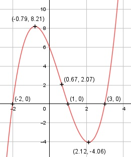

Aufgabe 38 f(x) = (x2 - x - 6) * (x - 1) = x3 - 2x2 - 5x + 6 f'(x) = 3x2 - 4x - 5, f''(x) = 6x - 4, f'''(x) = 6 Definitionsbereich: -∞ < x < ∞ Wertebereich: -∞ < f(x) < ∞ Asymptoten: - Symmetrie: - Nullstellen: x3 - 2x2 - 5x + 6 = 0 Durch Probieren gefunden x = 1. Hornerschema: 1 -2 -5 6 x1 = 1 1 -1 -6 ------------------------- 1 -1 -6 0 Polynomdivision: x3 - 2x2 - 5x + 6 : (x - 1) = x2 - x - 6 -(x3 - x2) ------------ -x2 - 5x + 6 -(-x2 + x) ------------ -6x + 6 -(-6x + 6) --------- 0 x2 - x - 6 = 0 p, q - Formel: p = -1, q = -6 x2,3 = x2,3 = 0,5 ± x2,3 = 0,5 ± x2,3 = 0,5 ± 2,5 x2 = 3 x3 = -2 N1(1|0), N2(3|0), N3(-2|0) Schnittpunkt mit der y-Achse: f(0) = 03 - 2 * 02 - 5 * 0 + 6 = 6 Sy(0|6) Extrempunkte: 3x2 - 4x - 5 = 0 A, B, C - Formel: A = 3, B = -4, C = -5 x1,2 = x1,2 = x1,2 = 4 ± 8,72 x1,2 = ---------- 6 x1 = 2,12, f(2,12) = (2,12)3 - 2 * (2,12)2 - - 5 * (2,12) + 6 = - 4,06 x2 = -0,79, f(-0,79) = (-0,79)3 - 2 * 8-0,79)2 - - 5 * (-0,79) + 6 = 8,21 f''(2,12) = 6 * 2,12 - 4 > 0 --> Tiefpunkt (2,12|-4,06) f''(-0,79) = 6 * (-0,79) - 4 < 0 --> Hochpunkt (-0,79|8,21) Wendepunkte: 6x - 4 = 0 |+4 6x = 4 | :6 x = 2/3, f(2/3) = (2/3)3 - 2*(2/3)2 - 5*(2/3) + 6 = 2,07, f'''(2/3) ≠ 0 --> Wendepunkt (2/3|2,07) Graph:
